Lista elementów elektronicznych
- Rezystor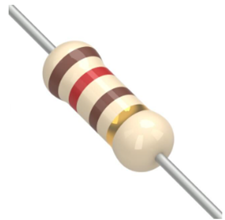
- Kondensator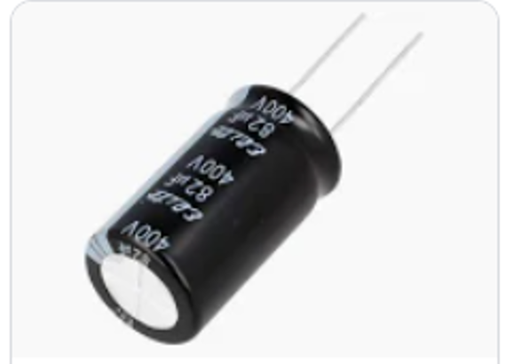
- Dioda LED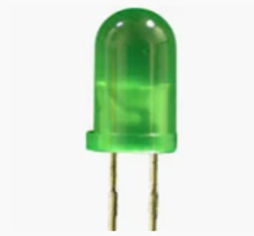
- Wyświetlacz siedmiosegmentowy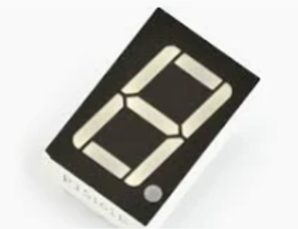
- Klawiatura 4x4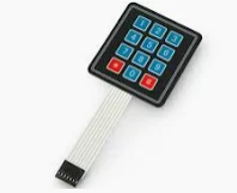
- Mikroswitch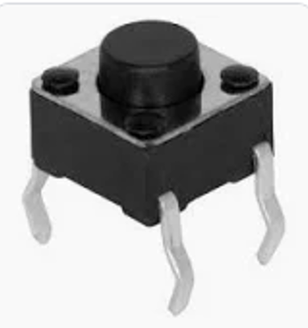
- Fotorezystor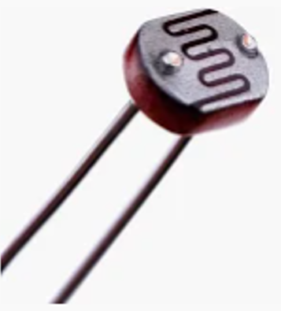
- Przekaźnik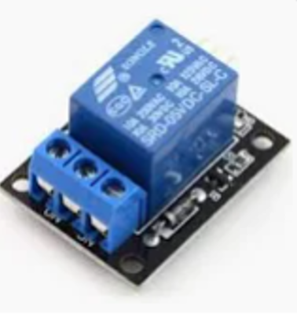
- Silnik krokowy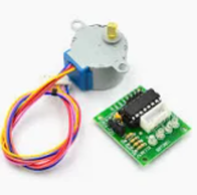
- Servo SG-90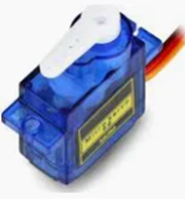
- Potencjometr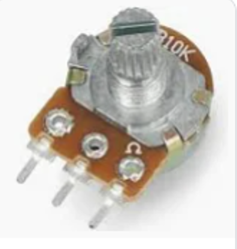
- Enkoder inkrementalny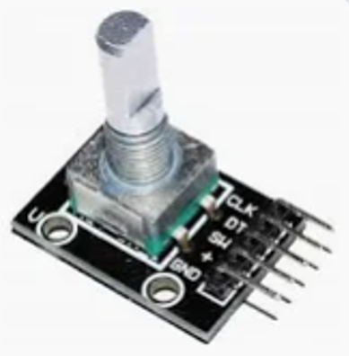
- Czujnik ultradźwiękowy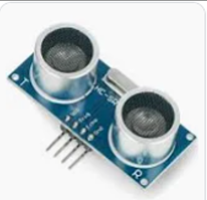
- Kontaktron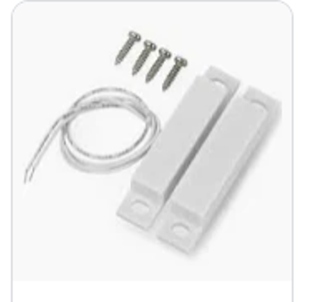
- Wyświetlacz LCD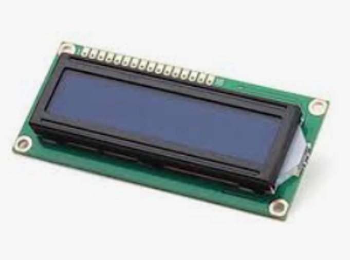
Rezystor
Rezystor ogranicza przepływ prądu w obwodzie elektrycznym.
⬅ Powrót do listy
Kondensator
Kondensator magazynuje energię elektryczną w polu elektrycznym.
⬅ Powrót do listy
Wyświetlacz siedmiosegmentowy
Służy do wyświetlania cyfr za pomocą siedmiu segmentów LED.
⬅ Powrót do listy
Klawiatura 4x4
Pozwala na wprowadzanie danych poprzez zestaw przycisków.
⬅ Powrót do listy
Mikroswitch
Mikroswitch to mały przełącznik aktywowany naciśnięciem.
⬅ Powrót do listy
Fotorezystor
Fotorezystor zmienia opór w zależności od natężenia światła.
⬅ Powrót do listy
Przekaźnik
Przekaźnik umożliwia sterowanie obwodem za pomocą sygnału elektrycznego.
⬅ Powrót do listy
Silnik krokowy
Silnik krokowy obraca się o dokładnie określone kąty.
⬅ Powrót do listy
Servo SG-90
Serwomechanizm umożliwia precyzyjne ustawianie kąta obrotu.
⬅ Powrót do listy
Potencjometr
Potencjometr pozwala regulować napięcie poprzez zmianę oporu.
⬅ Powrót do listy
Enkoder inkrementalny
Enkoder zamienia ruch obrotowy na impulsy elektryczne.
⬅ Powrót do listy
Czujnik ultradźwiękowy
Służy do pomiaru odległości za pomocą fal dźwiękowych.
⬅ Powrót do listy
Kontaktron
Kontaktron reaguje na pole magnetyczne i działa jak przełącznik.
⬅ Powrót do listy
Wyświetlacz LCD
Wyświetlacz LCD pokazuje informacje w postaci znaków i symboli.
⬅ Powrót do listy